Musicians learn one song across a player, chord charts, tutorials, lyrics and practice tools, and lose sync with the exact version they are trying to learn.
Echo
Case study · Hackathon project
A music app that closes the gap between listening to a song and learning it. The idea: put the learning layer inside the player, tied to the exact version you are hearing.
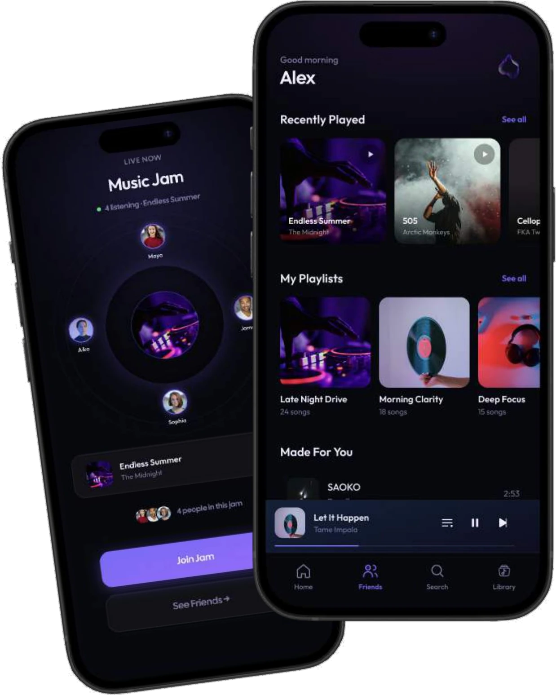
01 — The idea in 30 seconds
Echo was built in a few hours, by two interns, for the NSUT Oblivion Hackathon. It won first prize among 150+ teams.
Musicians learn one song across a player, chord charts, tutorials, lyrics and practice tools, and lose sync with the exact version they are trying to learn.
The one thing that stays constant is the song. Everything a learner needs should hang off the exact track and version.
Stream the full catalogue, tap Learn, and get synced chords, tabs, lyrics, tempo, loops and a Jam in one place.
02 — The user
Aditi is prepping a song for a sangeet. What she says and does shows the problem more clearly than any feature list.
03 — The gap
We compared four tools learners use today. Each is best at one thing. Echo puts the four things that matter in one place, and we name its own gap honestly: streaming master audio needs licensing.
| Feature | Yousician | Ultimate Guitar | Moises.ai | Simply Piano | Echo |
|---|---|---|---|---|---|
| Core value | Gamified practice and interactive lessons | Interactive tab/chord directory | AI audio isolation and track manipulation | Interactive beginner piano learning | All-in-one practice-integrated music streaming |
| Audio source / catalogue | Synthesized MIDI, limited licensed backing tracks | Synthetic MIDI, community uploads | User file upload (MP3/WAV/YouTube links) | Fixed curriculum library, limited pop songs | Full licensed streaming catalogue (master audio) |
| Live stem separation | Pre-rendered tracks only | No | Market leader (AI vocal, drum, bass, guitar) | No | Integrated AI stems (mute/isolate on live stream) |
| Interactive chords & tabs | Gamified falling-notes view | Market leader (800k+ tabs, auto-scroll) | Basic AI chord detection | Sheet-music style | Version-synced chords (matched to the exact audio) |
| Pitch shift / transpose | Strictly tuned to standard | Transposes chord text only | Real-time audio pitch shifter | No | Audio transpose and key match for singers and players |
| Practice tools (BPM / loop) | Tempo control in lessons | Metronome and static autoscroll | Best in class (smart metronome, A-B looper) | Lesson-bounded looping | Native player controls (A-B loop, speed without pitch drift) |
| Primary friction / gap | Feels like a rigid classroom app, not a daily player | Tabs often mismatch specific live/acoustic versions | High upload friction; not a discovery app | Locked to piano; no singer/jam utility | High licensing requirement for master streaming |
04 — The solution
Five product decisions, all with one rule: learning content stays tied to the exact song.
05 — How it works
The demo is a clean two-screen story: the player, then the learning view.
Share the song from any platform. No copy-pasting a link.
The full media player opens on that exact song.
One tap opens a view tied to the version: studio cut, 118 BPM, key of Am.
Pick an instrument or role. Chords, tabs and lyrics follow the song. Slow down, loop, count in, transpose.
Take it to friends, and save your progress to resume.
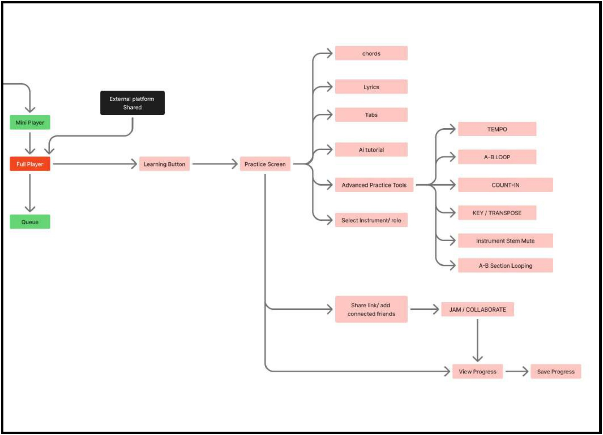
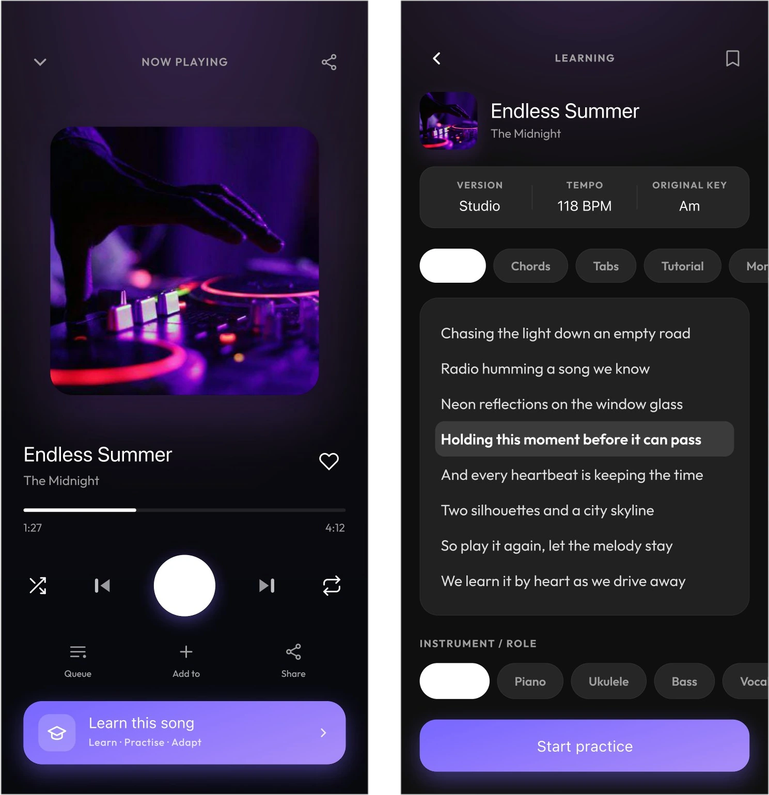
06 — The process
A few hours, two rounds, and one working flow that we threw away. Here is the path, then each step.
07 — Step 1 · Round 1: the brief
Round 1 asked how a streaming app could work better for the people who use it every day. Four problems kept showing up.
Start with music you already know: Recently Played, Saved Songs, Playlists.
Contextual recommendations when you want something new, without an overwhelming feed.
Share, Jam or Blend directly from the music you're listening to.
08 — Step 2 · Wireframes
Before any colour, the question was where things live: your music on top, discovery second, people third.
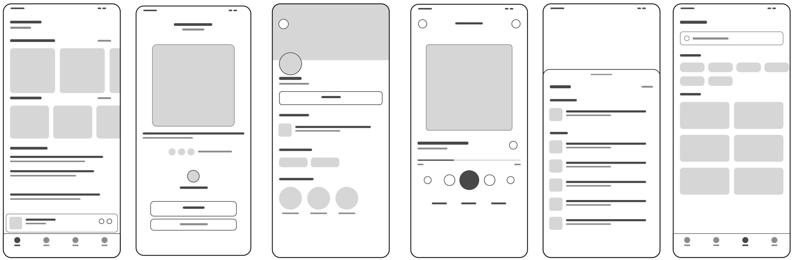
09 — Step 2 · Design system
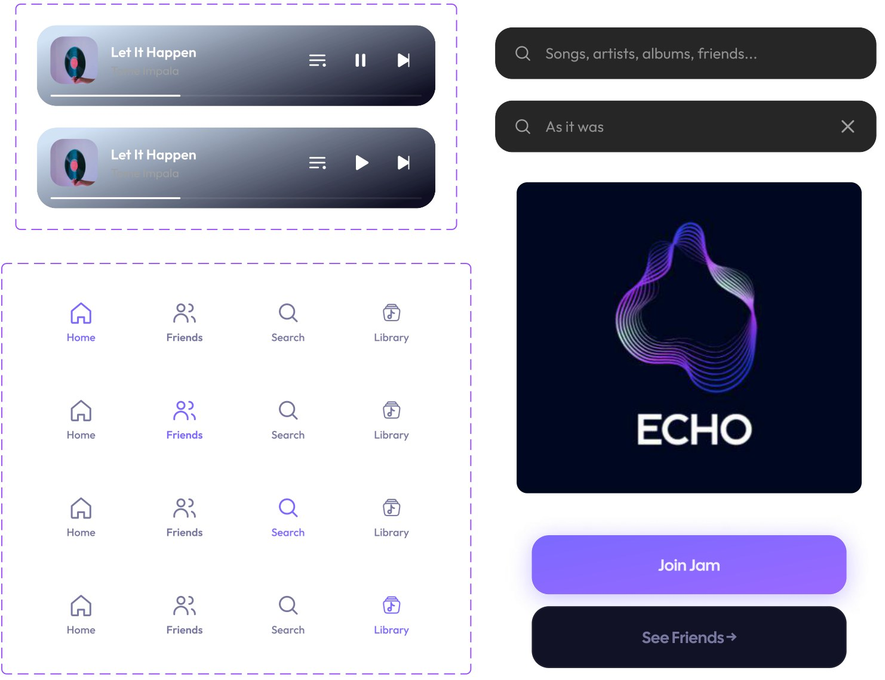
10 — Step 2 · Final screens
Your library first. Jam and Blend sit one tap away from whatever is playing.
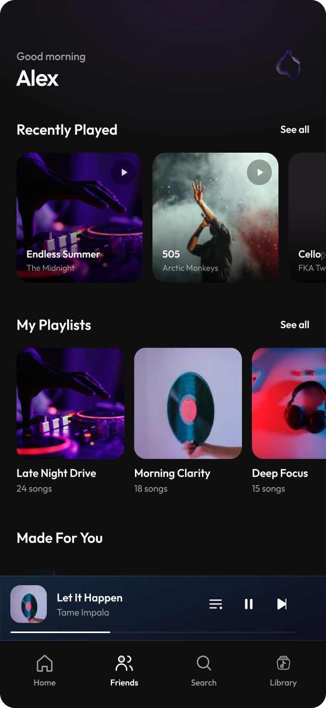
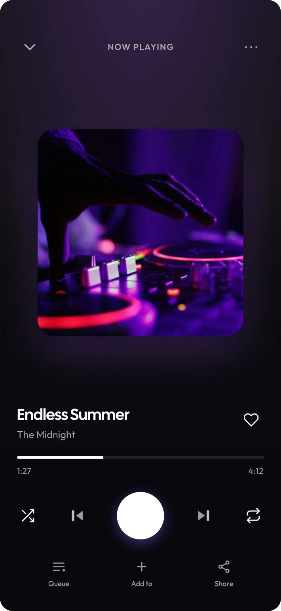
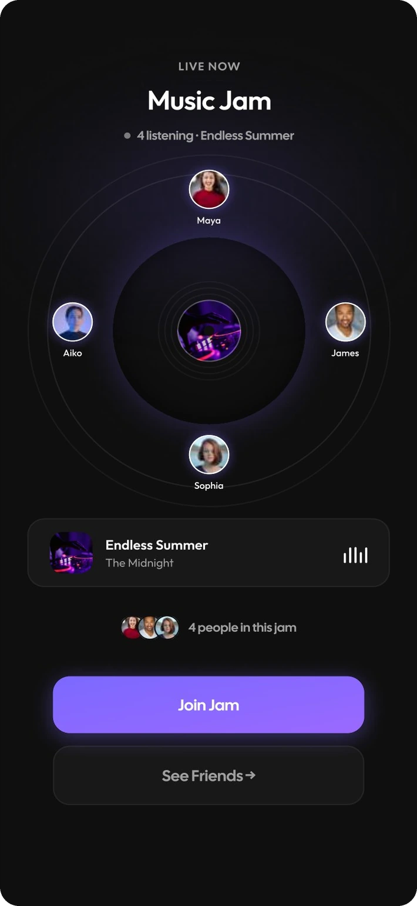
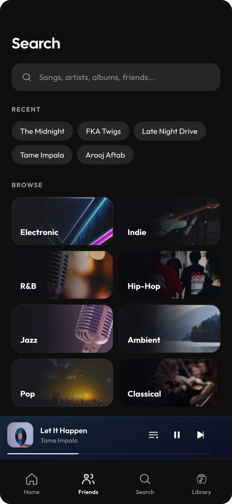
11 — Step 3 · The pivot
Round 1 asked us to fix streaming apps. Round 2 asked a different question: why is learning a song so hard? That meant a new problem statement, a new user and a new flow, with the clock still running.
12 — Step 5 · Rejected flows
Each rejected flow taught us something the final flow keeps. We could only throw them away because we could say why.
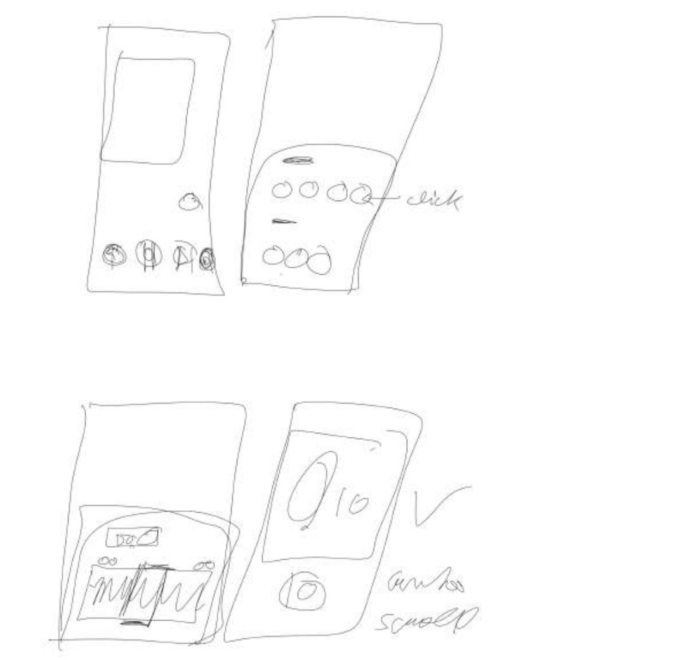
ThenThe user chooses between instrumentalist and vocalist mode.
IssueOnly one feature at a time. Blending the two doesn't work.
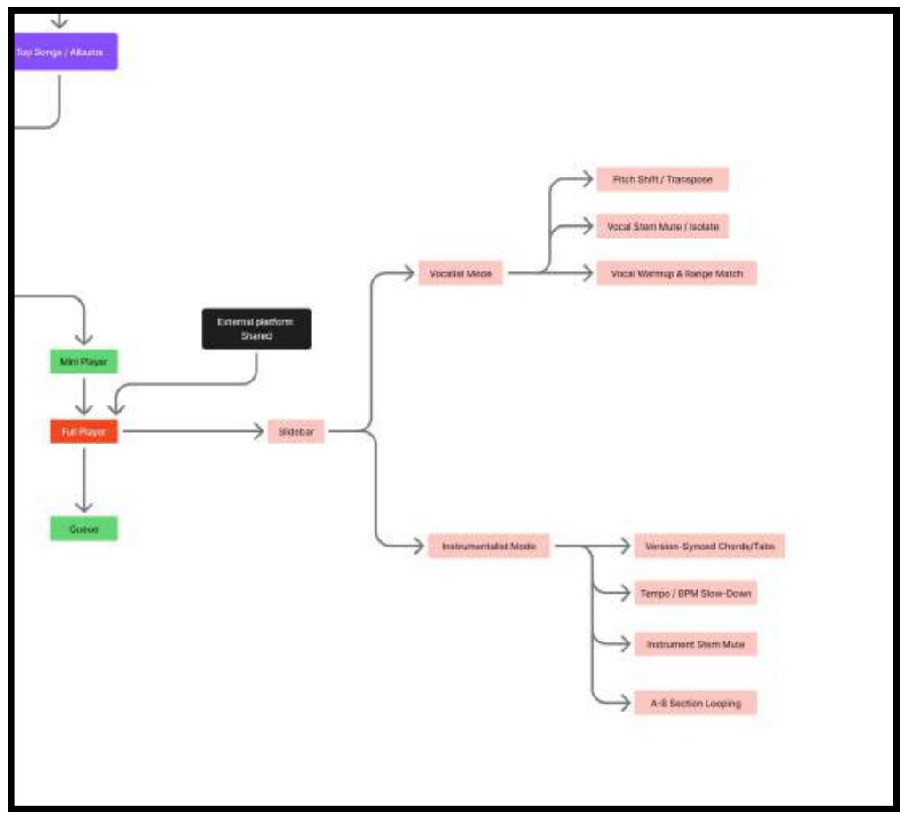
ThenNo sharing, no Jam, no saved progress.
IssueUsers can't collaborate or pick up their previous practice.
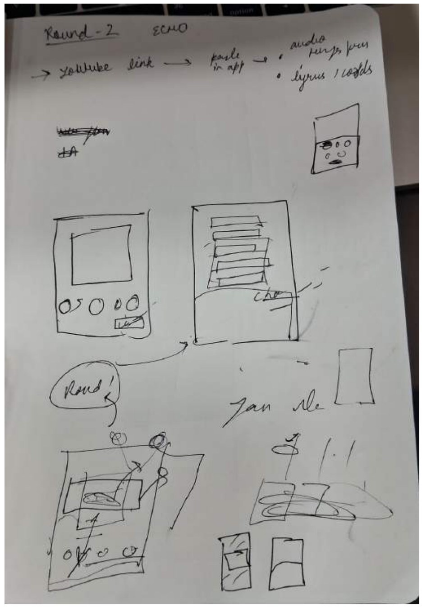
ThenUsers copy and paste a link into the app.
IssueFriction.
FixShare the song from any platform to Echo. The full media player opens.
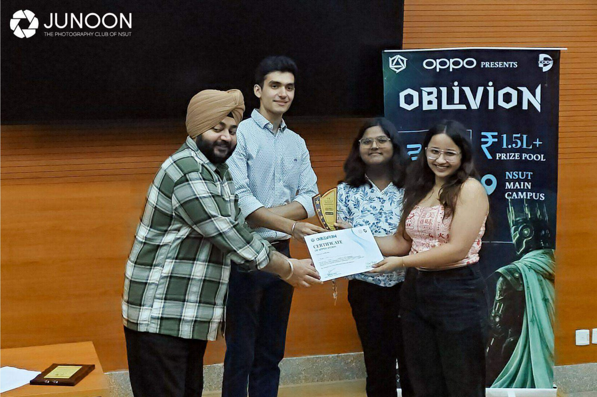
13 — The result
Between 150+ teams, our research and idea made it to the top place, with a chance to publish the app.
14 — Reflection
The mid-hackathon pivot meant discarding a working flow and restarting persona research under time pressure. I trusted my fellow intern and we pushed each other.
Having to state why a flow was rejected made me a more deliberate designer than shipping the first version I liked.
That was Echo
More case studies are on their way: MyDayss, then the branding work and a playzone for everything else.